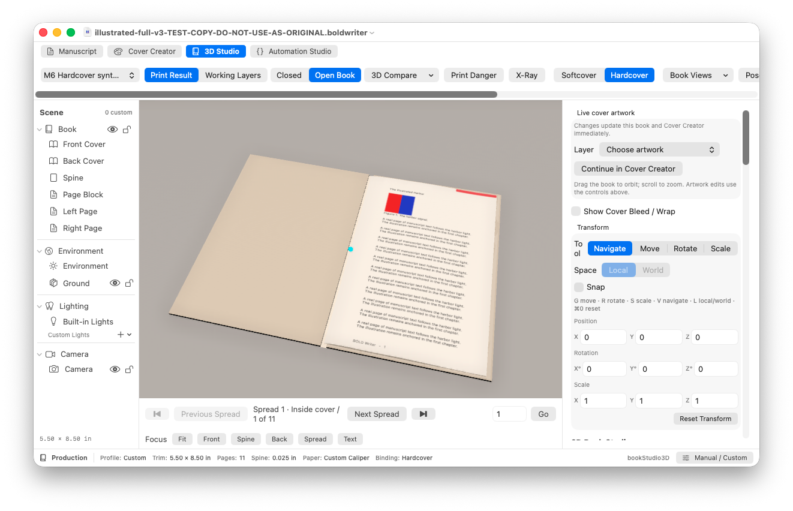
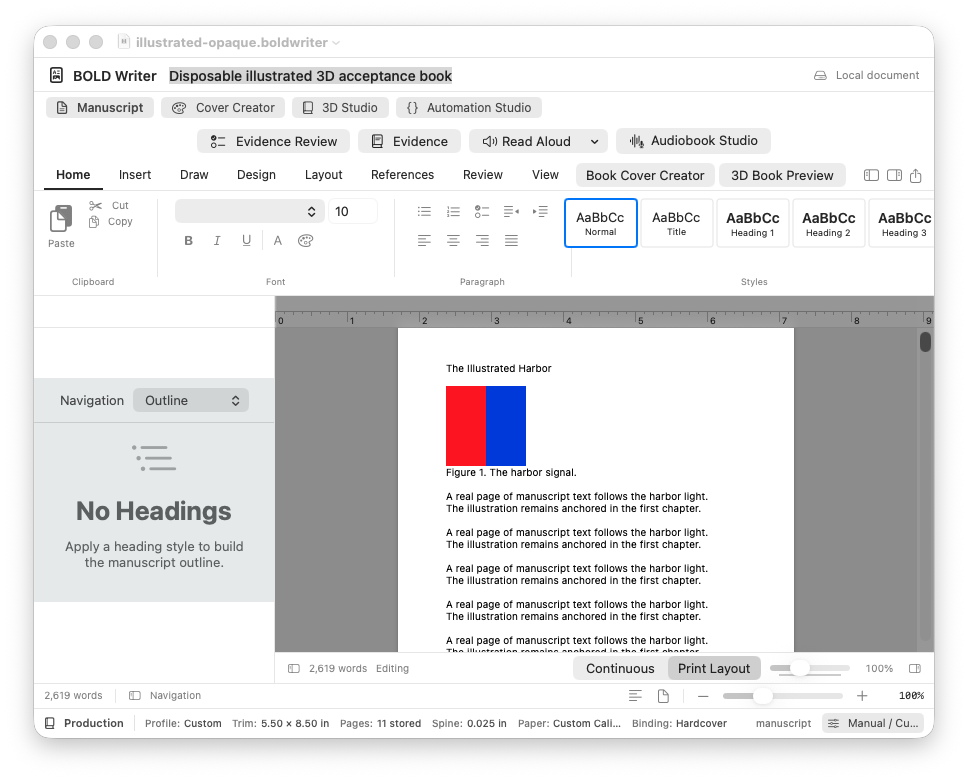

Write & edit
Native manuscript editing, rich text, styles, search, outline navigation, and editable document packages.
Authors Be Bold · A free, open-source macOS publishing studio
Write the manuscript. Shape the pages. Design the cover. See the book take form. Help us build one place for an author's whole creative journey.
Under active development · macOS 14+ · MIT-licensed app source
From first page to finished form.
Why BOLD Writer exists
BOLD Writer began as one person's attempt to make beautiful, professional book publishing more accessible. The project has grown beyond what one person can reasonably finish alone. I'm opening it to the world because the best version of this studio will be built with the people who write, design, and engineer it.
Let's be BOLD together.
The studio in progress
These capabilities exist in the source today. Their breadth and reliability vary; the project is not yet a supported general-release binary.
Native manuscript editing, rich text, styles, search, outline navigation, and editable document packages.
DOCX handling, illustrated page layout, facing-page options, and PDF export powered by the manuscript model.
Editable layers, crops, masks, grouping, alignment, guides, and print-wrap geometry.
A native 3D preview renders manuscript pages and cover art. Interactive acceptance still needs more work.
The real macOS app
These are genuine window captures from an isolated Release build using a disposable synthetic manuscript and cover. We opened the document, viewed its editable cover layers, opened the 3D book, and advanced one spread. Full installed-app and long-book acceptance remain in progress.
Read the honest status ↗
A work in progress you can see
Each image shows the running macOS application with test content created for this project. The editor image shows a visible synthetic inline illustration; the 3D images show text and cover artwork from an earlier fixture. The colorful cover is test artwork, not a finished book design.



The path forward
Open invitation
Programmers can tackle focused issues. Designers can improve the authoring experience. Authors can explain what publishing software gets wrong. Students can learn in the open. Bring curiosity and a reproducible example.
Get started as a developer
Use a Mac with macOS 14 or later and full Xcode. There is no notarized downloadable app yet. The project includes SwiftPM tests and an Xcode Release build.
git clone https://github.com/jorgenandrewjohnson-jpg/BOLDWriter.git
cd BOLDWriter
export DEVELOPER_DIR=/Applications/Xcode.app/Contents/Developer
export TMPDIR=/tmp
swift test -j 1 --filter DOCXImageTests
Scripts/bold xcode-build